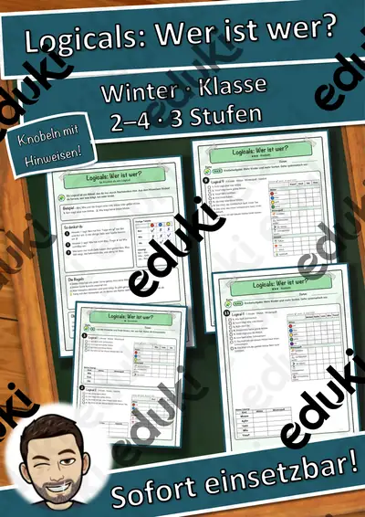
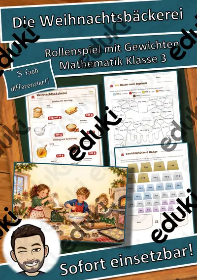
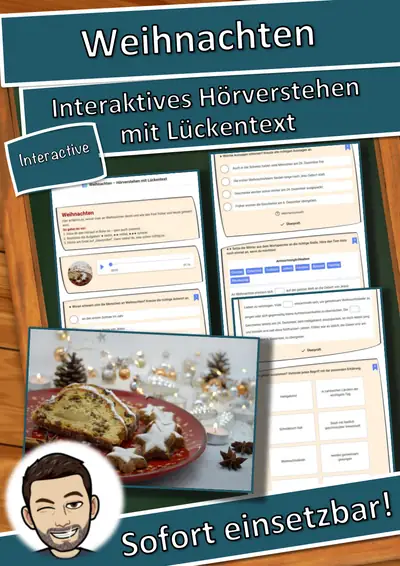

Weihnachts-Logicals: 6 Knobelaufgaben zur Weihnachtsbäckerei in 3 Stufen (Klasse 3–4)
KostenlosMaterial auf eduki ansehen
Knobeln in der Weihnachtsbäckerei: Sechs Logicals über Wünsche, Plätzchen und Baumschmuck.
Die Kinder lesen die Hinweise, tragen ✓ und ✗ in ein Raster ein und finden so heraus, wer was wünscht, backt und aufhängt. Jedes Logical hat genau eine Lösung.
Das ist drin (21 Seiten):
- Cover und Lehrerinfo mit genauer Vorbereitungsanleitung (4 Seiten)
- Anleitung mit Beispiel
- 6 Logicals: 2 × ★ leicht, 2 × ★★ mittel, 2 × ★★★ knifflig
- Lösungen mit Einstiegshinweis
- Abschlussseite mit passenden Materialien
Für Klasse 3–4 (starke Zweitklässler können mit ★ beginnen). Ideal für Freiarbeit, Adventswochenplan und Vertretungsstunde. Die Seiten sind schwarz-weiß-tauglich.
Dieses Material ist kostenlos. Frohe Weihnachtszeit! Snice
FachMathematik
KlasseKl. 3–4
SchulformGrundschule
MaterialartArbeitsblätter, Spiele
Ähnliche Materialien

Logicals „Wer ist wer?“ im Winter: 11 Logikrätsel in 3 Stufen mit Kreuztabelle und Lösungen (Klasse 2–4)

Winter-Rätselwerkstatt Materialpaket: Wer bin ich? + Krimi-Rätselheft + Logicals – 3 Rätselhefte in 3 Stufen (Klasse 1–4)

Die Weihnachtsbäckerei – Rollenspiel Gewichte kg und g, Rezepte verdoppeln, 3-fach differenziert (Klasse 3)

Materialpaket Rechenwelten im Winter für die 3. Klasse: 8 Mathe-Rollenspiele, 3-fach differenziert (Weihnachtsbäckerei, Lichterpark, Eisbahn & mehr)

Lesespaziergang: Plätzchen backen im Advent – 3-fach differenziert (★/★★/★★★), Klasse 2–4

Weihnachten – Hörverstehen mit Lückentext (interaktiv)

Weihnachten Lückentext mit Wortspeicher Hörverstehen und Suchsel